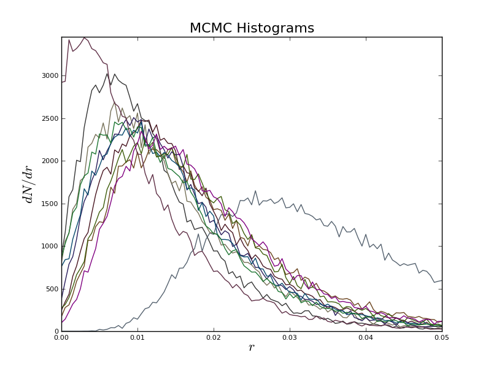
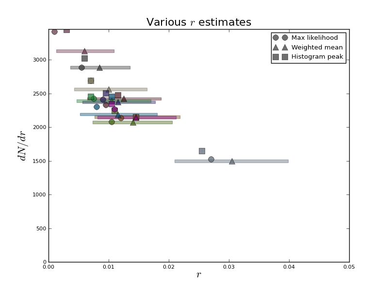
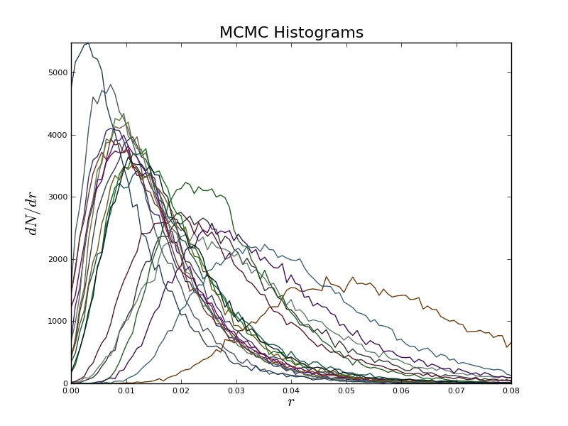

I'm basically running as many sky realizatons as possible right now, to see how cosmic variance and just straight-up random noise affects my estimates, and whether the likelihood-weighted variances give a realistic estimate of the noise we'd get from various sky realizations.
 
What we have here are the results of 11 emcee runs, and the resulting histograms of $r$. On the left, we
just have the number of $r$ values per bin with each run given a slightly different color, just to differentiate. On the
right, we have the three relevant values of each of those plots; the value of $r$ that corresponds to the maximum
likelihood (circles), the peak of the histogram (squares), and the likelihood weighted mean (triangles).
I've also included a horizontal bar around the weighted mean that represents the weighted standard deviation, $\langle
r\rangle\pm\sqrt{\langle r^2\rangle-\langle r\rangle^2}$.
Note that the average over all realizations, $\bar r=0.013$, and the standard deviation of all the weighted mean values is $\sigma_{\bar r}=0.00597$. Conversely, the average of all of the weighted standard deviations is $\bar\sigma_r=0.00638$. The value on the right is a little suspicious; I'm not sure how often an outlier like this will pop up, so I'm currently running 20 more simulations to see what this will do to the distribution of various peaks. However, if we excise the outlier, we obtain $\bar r=0.0115$, $\sigma_{\bar r}=0.00260$, and $\bar\sigma_r=0.00608$.
I also want to just include a running tally of how the errors vary in different realizations. I've done this by plotting $r/r_0$, etc., like I have been before, and also histograms of the error bars.
Incidentally, here are the same plots with 20 sky realizations. More are coming.



I have successfully implemented emcee for the 2D case, summarized in the below plot. I had to fudge things
just a little, since it turns out negative values of $r$ give huge likelihood values, so I just added a condition that
$\ln \mathcal L=-10^6$ when $r<0$.

These results come from the emcee, using 100000 total steps (I don't recall how many walkers I implemented
this time...) and the results don't have any weird correlations. With input values of $r=0.02$ and $s=1.0$, the
recovered values were $r=0.015\pm0.01$, $s=1.1\pm0.2$, $\alpha_d=0.0336\pm0.0002$, and $\alpha_s=0.100\pm0.002$.

Something that I'm doing (the code may be running as we speak) is taking a step back to create a 90 GHz map with only the 270 GHz data used, to see if I can get the $r$-$\alpha_d$ parabola that K&K demonstrated.

There does not seem to be this strict paraboloidal relationship that K&K had. This is probably because they obtained $\alpha_d$ by minimizing $\chi^2$ and then maximized the likelihood with respect to $r$, while I maximized the total likelihood with respect to both $r$ and $\alpha_d$.
I've taken the code Toby sent me, which varies the CMB $E/B$ mode signals linearly, \[ C^{XX}=c^{XX}_S+\left(\frac r{0.01}\right)c^{XX}_T. \] I've basically left David's code untouched, as I'm not familiar enough with the intricacies of changing from the $\ell m$ to pixel basis, and likewise for the code computing the likelihoods.
The first thing I did was compare the results of the grid-based parameter r=np.arange(0, 0.05, 0.001) to an
MCMC (Metropolis algorithm) implementation (60 steps, 1000 iterations), for the model without foregrounds. For the grid,
I noticed that most of the likelihoods were unbounded, were increasing logarithmically without a sign of decrease. There
appeared to be a rough paraboloid shape (harder to manipulate the plot, I have the data in
output_dust_synch.npy. (Also not included, just $r$ and $\alpha_D$, the likelihood always increases
logarithmically, r_max equals 0.06 always.)


I then varied $s$ as well,
\[
C^{XX}=sc^{XX}_S+\left(\frac r{0.01}\right)c^{XX}_T.
\]
using a grid with the same r and s=np.arange(0.8, 1.2, 0.01). The following plots are from a
single iteration, and I didn't run enough iterations to see a correlation between the $\alpha$'s and $r$.


First, I realized on Tuesday that one actually wants many more steps in an MCMC chain, and that something closer to 1000 steps, 60 iterations would be better.
Next, I want to go over the math needed for parameter estimation, with and without foregrounds, given $C^{EE}$ and
$C^{BB}$. As in K&K, we define the likelihood function
\[
\mathcal L(r,s,\alpha_i)\propto\frac{\exp[-\frac12\boldsymbol x'(\alpha_i)^T\boldsymbol C^{-1}(r,s,\alpha_i)\boldsymbol x'(\alpha_i)]}
{\sqrt{|\boldsymbol C(r,s,\alpha_i)|}},\qquad\boldsymbol x'=\frac{[Q,U](\nu)-\sum_i\alpha_i(\nu)[Q,U](\nu_i^\mathrm{template})}{1-\sum_i\alpha_i(\nu)}.
\]
The covariance matrix in pixel space is given by
\[
\boldsymbol C(r,s,\alpha_i)=r\boldsymbol c^\mathrm{tensor}+s\boldsymbol c^\mathrm{scalar}+\frac{\boldsymbol N_1+\boldsymbol N_2}{(1-\sum_i\alpha_i)^2}.
\]
Around Eq. (3) they say that $c_l^\mathrm{GW}$ is the $B$-mode power spectrum from gravitational waves with $r=1$, so
I'm assuming that this is what they do in Eq. (11) when they use the signal covariance matrix. $\boldsymbol N_{1,2}$ are
the noise covariance of a smoothed map before template cleaning. The model we use in the code is
\[
\boldsymbol C=\boldsymbol c + \frac{\boldsymbol I\sigma_0^2}{(1-\sum_i\alpha_i)^2}
\]
where
\[
\sigma_0=\frac{w_p^{-1/2}}{\mu\textrm{K arcmin}\times\theta_\text{pix}}
\]
where
\[
\theta_\text{pix}^2=\frac{4\pi}{N_\text{pix}}\left(\frac{180}\pi60\right)^2.
\]
Also, the signal covariance matrix $\boldsymbol c$ is given by the Appendix A, whereas the computation given by
cov=self.p.get(ee,bb) is the covariance matrix. So given $C_\ell^{EE}$ and $C_\ell^{BB}$, we get
clee_alm = expand_cl2alm(clee_raw), and the same for bb. This function uses r2lm(r), where
r is the "ordering integer", so that
\[
clee_alm = expand_cl2alm(clee_raw), and the same for bb. This function uses r2lm(r), where
r is the "ordering integer", so that
\[
\ell=\lfloor \sqrt r\rfloor,\qquad m=r-\ell(\ell+1).
\]
So clee_alm is just the coefficients up until the maximum l-value. There's this other quantity
ye, which is computed in get_matrix_emode_qu, which appears to be creating a basis of Q and U
vectors. They have something like re_alm[i] = [0,...,1,...0] (only the ith element is nonzero), then turn
this into a complex alm element.
To be frank, I have no idea what's going on in the last line of get(self, clee, clbb) in PolCovMatrix,
specifically the last three lines, where we seem to be creating this basis of real alms, but the multiplication really
isn't making much sense to me.
Conversely, \[ N_l=\frac{4\pi}{N_\text{pix}}\sigma_0^2 \]
For reference, the window function is given by $\exp(-\ell(\ell+1)\frac{\theta_\mathrm{FWHM}^2}{8\ln2})$, where (for a Gaussian profile) the fraction is equal to $\sigma^2$.